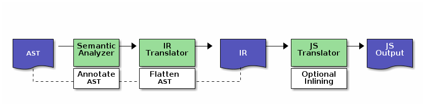

Amber's new compiler
Amber's new compiler
October 18, 2013
Amber's compiler has been improved some months ago and a post explaining its new architecture was a long overdue.
Following Opal (the new Pharo compiler) architecture, the compiler has been entirely rewritten from a single, complex and stateful AST visitor into several smaller, single-purpose classes, making it a more flexible and extensible compiler.
The new architecture
The AST produced by the parser is first annotated and validated by
the SemanticAnalyzer. The annotation step is important as it adds
semantic knowledge to the AST (scope, variable semantics, etc.).
This way we first make sure that the produced AST is both valid
syntactically and semantically, and keep semantic information
directly in nodes.
| ast ir output | ast := Smalltalk current parse: 'foo true ifTrue: [ ^ self asString ]'. (SemanticAnalyzer on: Object) visit: ast.
The second step is to produce an intermediate representation (IR)
through an IRASTTranslator. The IR tree is similar to the AST but is
simpler and flatten. It doesn't includes cascades for instance, and
cut down most of the tree into a flat list of instructions.
ir := IRASTTranslator new visit: ast.
From the IR it's a lot easier to perform efficient inlinings. This
optional step is performed by the IRInliner visitor. The IRInlner
replaces parts of the tree, with the inlined equivalent. You can find
the currently inlined send nodes with IRSendInliner class >>
inlinedSelectors.
The final step is then to produce the JavaScript output. This is the
role of the IRJSTranslator. The compiler can then install the method
in the appropriate class.
output := IRJSTranslator new currentClass: Object; visit: ir; contents
The following diagram shows the current architecture.

The public API
The Compiler facade hides all the internals away and provides the
public API to compile and install methods in Amber. It internally
delegates compiling to an instance of CodeGenerator, or its
subclass InliningCodeGenerator (the default), that will perform
the optional inlining step.
"Compiling without installing" Compiler new codeGeneratorClass: InliningCodeGenerator; "Default, can be omitted" compile: 'foo true ifTrue: [ ^ self asString ]' forClass: Object. "Compiling and installing" Compiler new codeGeneratorClass: InliningCodeGenerator; "Default, can be omitted" install: 'foo true ifTrue: [ ^ self asString ]' forClass: Object category: 'foo'
The end
That's all for now. The new compiler is a very important brick for
Amber. There is still room for improvement, as the generated code
could sometimes be simpler, but it is overall a great improvement
over the old compiler. Together with the new ASTInterpreter, it
will allow fancy new features in Amber, like the new stepping
debugger.
I plan to write another post with more details about the inlining steps. Stay tuned!
comments powered by Disqus